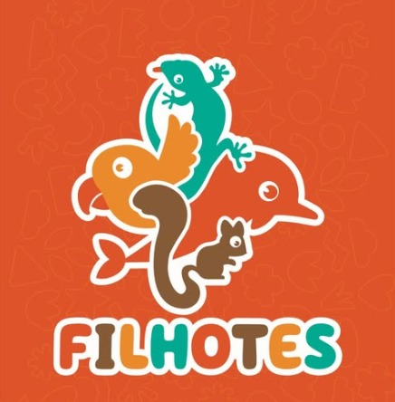

Filhotes
5 a 7 anosPrimeiros passos no escotismo com acolhimento, descobertas e atividades pensadas para aprender brincando.
Nessa fase, a criança fortalece confiança, convivência e autonomia em encontros leves e dinâmicos.
- Jogos cooperativos e integração em grupo
- Histórias e atividades de valores escoteiros
- Experiências ao ar livre com segurança